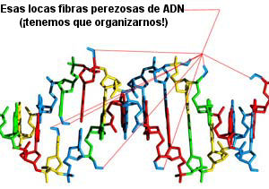

¿Nunca desaparecerá este autoengaño tan persistente?
La pequeña iglesia de San Agostino en Pantano, un suburbio agrícola pobre del puerto de Civitavecchia, Italia, a unas 40 millas al norte de Roma, apareció en los titulares internacionales en febrero de 1995, atrayendo a miles de visitantes curiosos y encantando a los medios cuando se dijo que una estatua de la Madona lloró lágrimas de sangre. Esta afirmación es, como sabemos, una cause célèbre bastante común, y se desvaneció con el resto de ese tipo de mitología, mezclado con otros objetos (imágenes o estatuas) que lloraban sangre, lágrimas, o aceite, u otros diversos objetos rotativos y/o brillantes de los que los periódicos sensacionalistas dependen para obtener titulares cuando la otra Madonna se porta bien.
Prepárense para otra avalancha de “evidencia”, porque la diócesis de Civitavecchia acaba de ordenar a teólogos, historiadores y doctores (todos “expertos”) que revisaran el material y preparen un documento oficial. Lo hicieron, y, lo que no sorprende, concluyeron que el fenómeno no tiene explicación ordinaria, alentando por lo tanto a las tiendas y hoteles locales a que esperen otra avalancha de ansiosos turistas.
El Corriere, el periódico más importante de Italia, dijo que el informe presentaba un cuidadoso análisis del testimonio dado en el momento por sorprendidos parroquianos, así como “todas las explicaciones posibles para el fenómeno”. El periódico dijo que era la “opinión unánime” de los “expertos” que “en ese rincón de la Tierra, a las puertas de Roma, tuvo lugar un suceso que no tiene explicación humana y señala al misterio de lo sobrenatural”.
Se dice que la estatua de 40 cm de alto lloró catorce veces, y monseñor Girolamo Grillo, el obispo local, dijo que la estatua lloró sangre mientras la sostenía en sus manos. Sin embargo, Grillo ha hecho una declaración muy cautelosa sobre el suceso, quizá recordando que muchas otras maravillas similares fueron reveladas posteriormente como flagrantes fraudes: “No hemos proclamado que el llanto de la Madona fue milagroso, pero los hechos hablan por sí mismos”. ¡Linda gambeta, monseñor!
¿Pero cuáles son esos hechos? Allá por 1995, se descubrió inmediatamente que el líquido rojo de la estatua era sangre humana masculina, lo que podría hacer que un escéptico se preguntara qué ocurró, pero eso no disminuyó el entusiasmo público por el milagro, por supuesto. Verán ustedes, esas maravillas no son para que las entiendan los meros mortales.
Algunos de nosotros podemos preguntar por qué no se realizó una prueba de verificación de coincidencia de ADN con los varones locales que tuvieron acceso a la estatua de yeso, en particular el dueño actual de la estatua, Fabio Gregori, y su familia. Eso significaría cuestionar la honestidad de ciertas personas, nos dijeron, algo que no se hace en el negocio de los fraudes religiosos. Ah, pero se aplicaron otros métodos de alta tecnología a esta estatua, mostrando que la ciencia real estaba funcionando para apoyar el milagro. Una radiografía y una tomografía computada no mostraron cavidades que pudieron alojar un dispositivo para lanzar líquido, ¿se dan cuenta? Bueno, perverso como soy, recuerdo que allá por los años 1940 en Kingston, Ontario, Canadá, al párroco local de una iglesia que había recibido la visita de otro milagro de una virgen llorosa se lo descubrió lanzando loción para afeitar de K-Mart en la celebrada estatua desde una pistola de agua disimulada. Esa figura santa también había sido cuidadosamente examinada por “expertos” que manejaron muy torpemente su investigación.
Algunos de nosotros nunca crecen, amigos, y seguirán lanzando miradas fascinadas ante tales afirmaciones porque apoyan la mitología popular. El pensamiento medieval todavía está de moda, parece. Y, debemos preguntarnos, ¿qué experiencia tienen “teólogos e historiadores” en juzgar tales temas? ¿Mucho material anecdótico? ¿Apelaciones al orgullo local? Y esos doctores en medicina que pudieron usar su autoridad (si tuvieron alguna) para realizar las pruebas apropiadas y obvias, ¡simplemente no lo hicieron!
Diez años luego del hecho, es un poco tarde para iniciar otra investigación, un hecho que les conviene perfectamente a los traficantes de milagros. La Virgen Sangrante de Civitavecchia va en camino de convertirse en una maravilla aceptada de la cristiandad, estoy seguro…
Los vulnerables nunca aprenden
El lector “Steve” de Sydney, Australia, nos cuenta:
Hay un programa de TV que se está emitiendo aquí en Australia llamado “Missing” (“Desaparecidos”). Es un documental que muestra las actividades diarias de la policía y otros departamentos que se ocupan de hallar gente cuya desaparición han denunciado familiares o amigos. Como puede imaginar, la gente que accedió a aparecer están revelando una parte devastadora de sus vidas a los ojos del público, supongo que con la esperanza de ayudar a encontrar a sus seres queridos con la exposición en televisión.
Pero la parte perturbadora: durante una de las entrevistas, la madre de una niña que ha estado perdida por casi veinte años estaba hablando sobre la angustia que sufrió a diario desde que su hija desapareció. Casi como un comentario al margen mencionó que fue a visitar a tarotistas y psíquicos porque le dieron “alguna esperanza” sobre el paradero de su hija. Sonrió apenas y murmuró algo sobre que eso le ayudó.
Poco después de esto, los resultados de una prueba de ADN que se había realizado en restos humanos no identificados descubiertos hacía 15 años fueron positivos, probando que la hija de la mujer de hecho había muerto. Como los restos eran esqueléticos no se pudo determinar el momento real de la muerte, pero se ha abierto una investigación de homicidio así que supongo que creen que la mataron poco después de su desaparición.
Uno sólo preguntarse qué le han estado diciendo los tarotistas, etc. a esta pobre mujer a lo largo de todos estos años y cuánto dinero le esquilmaron. Es una actividad repugnante e insensible que debería ser expuesta como lo que es: un fraude para arrebatarle a la gente vulnerable el dinero que tanto les costó ganar.
Steve, no podemos suponer que esos “psíquicos” proporcionan información falsa a sus clientes a sabiendas. Muchos de ellos (¡no los profesionales que prosperan, eso sí!) realmente creen que tienen poderes paranormales; esa es la clase de gente “honesta pero engañada” que se presenta para el premio de la JREF. Cualquiera que tenga puesto el cartelito promocionando poderes mágicos probablemente sea un fraude, pero hay algunos que de verdad no pueden evaluar sus propias capacidades. Como he dicho antes, denme un fraude evidente, y puedo manejarlo; los que se autoengañan de forma inocente son otro asunto.
Pritchard el asombroso
Hace dos años tuvimos la suerte de tener un interno durante las vacaciones de verano trabajando aquí en la JREF, nuestro excelente amigo Jonathan Pritchard. Vino a nosotros desde el Colegio Berea de Kentucky, la excelente institución que he visitado con frecuencia. Jonathan no sólo trabajó con nosotros aquí en Florida en 2003 y 2004, sino que también asistió a dos TAMs. Muchos de ustedes lo habrán conocido en Las Vegas. Este joven no sólo sabe de magia, sino que también puede mostrarle unos bailoteos muy interesantes como resultado de su práctica entusiasta del arte de bailar el swing. Muchas doncellas de Florida han danzado con Jonathan, y nos inundaban las visitas de admiradoras durante su estadía con nosotros.
Recién llegada: una nota muy bienvenida del señor Pritchard luego de su regreso a Berea después de TAM3:
Quería contarle que ayer hice mi presentación, para la culminación de mi clase de enero, y obtuve la calificación máxima en el proyecto. Di una presentación de 45 minutos y luego tuve una sesión de preguntas y respuestas. Mi profesor auspiciante daba una clase sobre dinosaurios, de modo que sus estudiantes parecían ser una buena audiencia para mi charla. La mayoría de los muchachos compartían mis convicciones, pero hubo un par que decididamente se enojaron conmigo por desafiar sus creencias. Hablé sobre la ciencia de la evolución, y discutí la esencia del “debate sobre la evolución” desde dos puntos de vista opuestos: un punto de vista empírico versus un punto de vista caprichoso y basado en expresiones de deseo en relación con la vida.
Mi profesor dijo que le impresionó mi presentación, y que no estaba acostumbrado a que muchachos de mi edad pudieran manejar tal variedad de información con tanta facilidad como la que mostré en mi charla. ¡Esas son buenas noticias! Quería comentarle que TAM3 fue productivo y útil en mi paso por la universidad. Pensé que le interesaría saber cómo me fue.
¡Claro que sí! Otro pequeño triunfo para nuestra causa, aunque Jonathan no necesitaba que lo convfencieran del enfoque racional de pensamiento, se los aseguro. Esa luz difusa que ven en torno a mi oficina es un aura de satisfacción, y en parte de orgullo. Es una maravillosa fuente de iluminación, ¿no les parece?
Una epifanía
La lectora Michi Dewhurst, desde Bielefeld, Alemania, ha hecho un importante descubrimiento. Los tiempos de verbo usados aquí pueden ser un poco confusos, pero creo que entenderán a medida que lean. Michi escribe:
He seguido con avidez a Sylvia Browne más o menos durante 10 años, ya que la veía con frecuencia en el programa de Montel Williams en el Reino Unido, donde viví durante mucho tiempo. Desde que volví a mi casa en Alemania he hablado y pensado en pocas cosas aparte de Sylvia. Ella me dio esperanza en pensar que hay algo después de la vida en la Tierra y que la vida en la Tierra es el infierno que debemos atravesar antes de que se nos recompense con una vida hermosa en otra parte. Quiero creer que mi amada abuelita muerta es mi guía espiritual y me cuida y me guía y me protege.
En los últimos días he entrado al sitio [de Sylvia] y he estado leyéndolo y he llegado a la conclusión de que es una persona en verdad maravillosa y me gustaría que me hiciera una lectura personal, aunque cueste 700 dólares que no puedo costear en este momento, e iba a pedir sus libros.
En relación con Sylvia (por medio de Google) me topé con el sitio de usted esta mañana a las 8 de la mañana y todavía estoy leyéndolo (sus comentarios). Me molestó y me impactó mucho lo que estuve leyendo en su sitio. Siempre me creí una persona racional pero de mente abierta… a veces escéptica pero que con frecuencia cree y confía en la bondad de la gente, pero luego de leer los comentarios de usted y los de sus invitados tuve que llegar a la conclusión de que si Sylvia en verdad se está negando a hacer su prueba, entonces debe ser una farsante.
No puedo comprender por qué si alguien es un psíquico verdadero se niegue a comprobarlo. Yo le pagaría a usted un millón si pudiera comprobar que tengo una cualidad genuina. Pero ahora me siento tan increíblemente triste y perdida por tener que repensar mis creencias que pensé en escribirle a usted y contárselo.
Pero aún así quiero agradecerle por sus años de dedicación en exponer a los farsantes, los falsos y los mentirosos. No sé cómo me afectarán más adelante mis hallazgos de hoy, tengo mucho en que pensar, pero aún así quiero agradecerle por hacerme repensar todo ello.
Ahora seguiré leyendo. ¡Caray, hay mucho que leer! Mis mejores deseos.
Le respondí a Michi:
Michi: siempre es difícil responder a una carta de este tipo. No puedo darle un sustituto igual de fácil a sus creencias anteriores, pero puedo alentarla a enfrentar la realidad que ahora se encuentra ante usted.
La vida y la muerte son cosas que con el tiempo tenemos que enfrentar, por supuesto. Lo he hecho varias veces yo mismo, y nunca me ha resultado fácil. Perdemos amigos y miembros de la familia, sufrimos por haberlos perdido, y nos forzamos a continuar. Creo que la única forma en que podemos compensar esas pérdidas es recordar y atesorar nuestros los recuerdos de épocas anteriores, la dicha y las risas que hicieron que esas personas fueran tan valiosas para nosotros, y los dones que dejaron para nosotros al irse.
Las personas como Sylvia Browne son buitres que están a la caza de personas vulnerables que deberían estar mejor informadas sobre el mundo real y cómo funciona realmente. Nuestro propósito aquí en la JREF es informar a esas personas y por lo tanto protegerlos de la desilusión que les espera sin falta cuando invierten en las estratagemas que los “psíquicos” les ofrecen.
Ciertamente no es usted la única que me expresa esta clase de reacción, ni será la última. Aceptar el hecho de que nadie vive para siempre, ya sea aquí en la Tierra o en alguna otra “dimensión”, no es fácil, pero, como me informan con frecuencia, hay un sentimiento de gran alivio y liberación cuando se toma esa decisión. La aliento sinceramente a ir en esa dirección, y le aseguro que me gustaría saber de usted a medida que avanza por ese camino.
Creo que Michi tiene suerte de haber tenido esta epifanía antes de haber invertido en una de las “lecturas” de Browne, y creo que hará bien la transición, y que otros seguirán su ejemplo. De esto se trata la JREF, y para eso estamos aquí.
Superstición en China

El lector “Mike” amplía un artículo reciente:
En relación con el artículo sobre el tipo sanguíneo que determina la personalidad en China, no es sólo común, sino que con frecuencia determina si a uno lo emplean. He trabajando por una compañía de recursos humanos en China por un tiempo y no puedo convencerlos de que esta es información innecesaria. Algunos clientes pueden especificar qué tipos sanguíneos aceptarán para los empleados en ciertos cargos.
He logrado que cedan un poco en lo que se refiere a medir el atractivo físico de un aspirante, pero sé que nunca lograré que retiren la pregunta del tipo sanguíneo. Ha sido parte de la cultura durante tanto tiempo que no es una creencia realmente; es más una costumbre a la que se le da alta prioridad. Muchos de ellos no lo creen de verdad.
Mike, no olvide que aquí en los EE.UU. alguna vez tuvimos un presidente que seguía las instrucciones de una astróloga, que Canadá tuvo un primer ministro que visitaba con regularidad a una espiritista para pedirle consejo, y que hoy el Reino Unido tiene una pareja viviendo en el 10 de la calle Downing que tienen bastantes supersticiones y “psíquicos” trabjando para ellos, y que El Al, la aerolínea israelí, solía contratar a sus empleados basándose en su signo astrológico… y por lo que sé, podrían seguir haciéndolo. El gobierno del gran continente de la India está influido fuertemente por los gurúes y la astrología… Podría seguir, pero pienso que se da cuenta de lo que quiero decir: el disparate nos afecta a todos.
Ese ADN perezoso
La lectora M. Alice se tropezó con un gran descubrimiento biológico:
Pensé que le gustaría saber que hay un sitio web que ofrece “reactivar” las diez hebras mágicas de ADN “desactivadas” que los humanos normalmente no usamos (o posiblemente no tenemos), ¡dándonos ultra super poderes! ¡También ayudará a los adolescentes con los puntajes para su examen universitario! Todo por el bajo, bajo precio de 100 dólares por sesión. Ni siquiera hay que dejar el hogar para que esto ocurra… el dueño del sitio (un tal Toby Alexander) usará visión remota para cambiar su estructura de ADN.
Espere… ¿eso no sería “cirugía remota”? ¿O él sólo ve mi ADN desde lejos? ¿La operación verdadera costará más?
Randi: vea http://www.dnaperfection.com/ para ver el disparate completo, y no se pierda las credenciales del fundador, que pueden encontrarse en http://www.dnaperfection.com/pages/5/index.htm. Pero tenga cuidado de sentarse, no vaya a ser que se lastime cuando se desparrame de la risa. Nuestra lectora continúa:
Mi parte favorita de este sitio es sobre algo que el propietario llama “Niños Índigo” […] que son alguna clase de cruza entre profetas, extraterrestres y cienciólogos de nivel 8 o algo así. Esta es la prueba que puede hacer usted mismo para determinar si usted es un Niño Índigo:
¿Siempre está buscando su propósito más importante en la vida pero siente que el mundo no es para los de su clase?
¿A veces se siente más sabio de lo que correspondería a su edad?
¿Tiene problemas adaptándose a las normas de la sociedad?
¿Se siente fuera de lugar en el mundo de hoy?
¿Percibe al mundo de forma distinta a la mayoría de la gente que lo rodea?
¿Tiene fuertes intuiciones sobre algunas cosas que la mayoría de los otros no tiene?
¿Con frecuencia se siente incomprendido cuando intenta hablar con la gente sobre lo que es real?
¿Busca la verdad?
¿Siente que nació para cumplir una misión especial en la vida?
¿Se siente aislado y solo en sus creencias?
¿Su familia no lo entiende?
¿Se siente antisocial a menos que esté con gente que piense parecido a usted?
¿Es sensible emocionalmente?
¿Tuvo una infancia difícil?
¿Con frecuencia siente que demasiada autoridad lo hace sentirse carente de control sobre las cosas?
Si respondió que sí a todas estas preguntas, felicidades. Usted es el adolescente promedio estadounidense, o el teórico conspirativo promedio estadounidense. No se moleste en hacerle pregunta alguna a este hombre, señor Randi, porque ha dicho en su sitio que a los que no creen sus afirmaciones o quieren pruebas les recomienda buscar otro sitio web con el que “resuenen” con más fuerza. Seguí su consejo y me ocupé de resonar con la JREF en lugar de con él.
P.D.: ¿Por qué la gente con poderes especiales siempre tiene algún tono de morado? Odio el morado. ¿Por qué no puede ser un tono superavanzado de salmón? ¿Granate Gurú? ¿Nogal Numinoso? ¿Púrpura Profético?
Lo siento, no tengo respuestas para el problema del color. Pero se me ocurren fácilmente Zafiro Zafio, Marrón Mentecato y Blanco Bobalicón…
Un ejemplo típico
Ha habido mucha discusión, tanto por e-mail como en el foro, sobre el hecho de que de vez en cuando la JREF tiene que informar a los aspirantes que, en nuestra opinión, deberían buscar asesoramiento profesional porque resulta evidente que tienen problemas emocionales y psicológicos. Algunos han dicho que no tenemos derecho de tomar tal decisión. Les diré, cualquiera que pueda ver realmente las solicitudes que llegan cambia de idea rápidamente. Les presento aquí un ejemplo de una que llegó hace poco. Creo que se darán cuenta de que esta persona dice disparates, y que requeriría una cantidad inmensa de mensajes incluso llegar a comprender qué trata de decir. Agregaré que no es la primera correspondiencia que recibimos de él; las llamadas telefónicas, los e- mails y las cartas recibidas han sido todas igual de vagas y difíciles como lo que verán aquí.
Repito lo que he dicho antes: este no es un intento de burlarnos de un aspirante. Es un intento de darles un ejemplo que tenemos que enfrentarnos cada día. Y los psicólogos clínicos profesionales a los que les hemos presentado este material nos han dado opiniones sobre esta gente que apoyan nuestras evaluaciones.
Lo que sigue se supone que debe ser (según las instrucciones específicas establecidas en las reglas del desafío) de no más de dos párrafos. También llegó sin ser autenticada ante escribano, lo que también se requiere claramente. Lo verán aquí con dos agregados escritos por el aspirante en la hoja (los presentamos entre corchetes y en negritas) y con la ortografía, la numeración y la puntuación originales [1], aunque en este formato corregido se ha vuelto bastante más legible para ustedes. El aspirante, un hombre de 22 años del estado de Nueva York, escribe:
Mi presentación tendrá una duración cualquiera entre 30-60 minutos y lo que se trata es basicamente de mi y 2-preferiblemente 3 jueces se sentarán en una habitacion totalmente a oscuras aislada del ruido externo (p.ej. bocinas, teléfonos y otra gente) puede estar en cualquier lado pero debe estar totalmente estancado-QUIETO. Las ventanas en la habitación son opcionales si pudiera elegir me gustaría que no hubiera, así no hay confusión en que la ventana pudiera ser una posibilidad para las Imágenes o pequeñas ráfagas de viento. Así que elimínenlas para la mejor presentación posible. La hora de esta presentación será en cualquier momento entre las 20 y medianoche-3 de la mañana lo que haga falta siempre y cuando sea de noche no hay problema.
SI es posible 1 de los 3 jueces tendrán ese día unos pocos minutos antes de participar de esta presentación, tendrán que haber vuelto del gimnasio o de hacer ejercicio. Quiero que este juez esté completamente exhausto hasta el punto de que se siente en el sofá [nosotros nos sentaremos en el piso] y descanse allí. 2-3 horas de pesas y caminatas serán suficiente y esta persona no es un fanático del gimnasio ni muy saludable en primer lugar. Cuando haga ejercicio ese día será por primera vez en 3-5 semanas, o meses o años. A veces esos músculos que se estimulan al “descansar” captan las pequeñas vibraciones de viento que dejan los fantasmas cuando vuelan a través de su brazo o pierna más fácilmente.
Los fantasmas primero se ven como, veamos… vaya a una habitación oscura con una luz ligera no -luz fuerte- y suelte 5-10 moscas de la fruta o moscas comunes y concéntrese en un cuadro frente a usted, ve las moscas a izquierda y derecha… casi siempre las capta porque cortan la oscuridad con sus movimientos pero aun asi no hay imagen.
En esta presentacion luego de 10 minutos ellos (los fantasmas) se harán más visibles, son como una pelusa, como en depredador -la pelicula- cuando es transparente se sabe donde esta pero es transparente.
El exito de mi presentación será cuando se complete lo siguiente hasta el máximo grado.
(1) Los fantasmas se alinearán en una fila única y Uno por Uno se arrodillarán delante de los tres jueces. Son ligeramente transparentes pero aún así puede véreselos… parecen pelusa… pero con la fila única tomarán el lugar de la persona frente a ellos y Como mi viejo Nintendo quemarán la imagen [de su presencia] en su percepción causando que sigan repitiéndose con la única fila de rodillas. No tienen ojos pero verán el contorno de su cabeza ya que estarán a 30 centimetros de distancia mirando a la de ustedes.
(2) Ustedes anuncian en voz alta (pueden hacerlo con un pensamiento en su cabeza pero para esta presentación por favor den todas las instrucciones en voz alta). Por ejemplo: “Por favor Samantha muevete a la izquierda para mí”. “Por favor Samantha muévete a la derecha para mí”. “Gracias Sam”. Y Sam volará a traves de su brazo o irá a la izquierda como le pidieron amablemente.
(2) Haré que froten Físicamente su pierna.
Si un fantasma volara, digamos, através de su brazo, lo sentirán con el pelo de su brazo. Este proceso lleva 1-2 segundos. Queremos que se tienda y que uno de los fantasmas emplee realmente 10-15 segundos concentrándose en una parte de su cuerpo digamos la pantorrilla y hacer que sienta la acción de flotar. POR FAVOR USE PANTALONCITOS DE TROTAR. A veces cuando frotan crean una sensación cálida, pero rara.
Esto constituiría una presentación exitosa. Veo que nadie ha pasado sus pruebas preliminares pero aún así estoy muy entusiasmado de presentarme con su fundación. Almorzaremos y hablaremos de ello y luego haremos mi presentación o si no olvídese del almuerzo y vamos directo al grano.
Gracias por su tiempo Señor, y estaré esperando su respuesta.
No tengo calificación en psicología ni psiquiatría, pero en mi opinión este joven se engaña a sí mismo, quizá de forma peligrosa. Confunde entradas sensoriales confusas por imágenes verdaderas de la realidad, y considera cualquier impresión que recibe como “fantasmas” percibidos de manera periférica. Juana de Arco, el Padre Pío y otros “visionarios” probablemente sufrían de las mismas ilusiones.
Todavía estamos intentando obtener una explicación coherente referida a un protocolo simple, pero creo que no es razonable que esperemos que nos la proporcione.
Fanáticos de las pegatinas
El lector Randall Wald tiene un comentario:
No sé si lee sitios de noticias tecnológicas, pero creo que la evidencia sugiere claramente que Slashdot entró en picada. Últimamente, publicaron un artículo sobre una compañía llamada BatMax. BatMax fabrica una pegatina que, de acuerdo con sus afimaciones, alarga la vida de la batería del teléfono celular. ¿Cómo funciona? Por medio de algún tipo de “material nanocerámico extraído de las piedras naturales”. En serio, al leer su “resumen tecnológico”, me sorprendió que no incluyeran la palabra “cuántico”.
Lo que asusta es que los mismos lectores de Slashdot que leyeron este artículo y se preguntaron si “también funciona para laptops” también responden a cualquier tipo de mensajes sobre biotecnología con temores de que los “científicos no deberían jugar a ser Dios” y que “muy pronto, esta investigación llevará a superbacterias creadas por terroristas”. De algún modo es de destacar cómo la gente que tiene experiencia en una disciplina (como la computación) puede ser tan ignorante en otros, incluso si las disciplinas están relacionadas (como la ingeniería eléctrica).
El aspecto más importante del verdadero enfoque científico sobre la realidad es que todo el conocimiento está circunscrito a una disciplina y que todos los expertos pueden estar equivocados; los que piensan que su experiencia en una disciplina se traduce directamente a otras se equivocan de medio a medio. Lo único destacable sobre el artículo de Slashdot es que cerca de dos tercios de los comentarios le dieron una paliza al que publicó el artículo original por no reconocer el fraude. Quizá todavía hay esperanza.


Quizá… ¡Randall, es la misma clase de basura que se usó hace algunos años para vender pegatinas parecidas a los usuarios de celulares, para protegerlos de las mortales emisiones de radiofrecuencia! Pero varios otros lectores encontraron para nosotros otro Fraude con Pegatinas Igualmente Estúpido:
Se publicita como un dispositivo para su auto que “ahorra dinero”, el “Disco de Combustible AntiSmog MPT”, un trozo de simple plástico del tamaño de una moneda de 25 centavos de dólar que se promociona internacionalmente por medio de ventas multinivel, la técnica de ventas que se basa en niveles de distribuidores. Las pegatinas se venden a US$ 299 cada una, ¡pero a los que convencen a otros de venderlas les dan un descuento! Los miembros de nivel más alto del engaño tienen que comprar un mínimo de diez AntiSmogs por unos US$ 1400.
Hay que pegar esta cosa en la parte de atrás del tanque de gasolina de su auto, luego de lo cual, dicen, descubrirá un aumento significativo en el rendimiento por litro y una mejora en la calidad del aire. Afirman que “envía frecuencias holográficas al tanque de gasolina y cambia la estructura molecular de la gasolina”. Ah, me preguntaba por el profundo trasfondo científico de esta maravilla. ¿Cómo pude haber dudado de que existía? Estoy seguro de que los audiófilos que compran cables de corriente y guías para altavoces, super científicos ambos, también invertirán en estas pegatinas.

Una sugerencia: deberíamos preparar una tanda de nuestras propias pegatinas, para pegárselas en la frente a cualquiera que sea lo bastante ingenuo para usar estos productos fraudulentos. Hela aquí.
Otra conversa
La lectora Lissa Hayes nos dice:
No sé si me recuerda. Le escribí en diciembre de 2003 agradeciéndole por hablar sobre los sanadores por la fe. Sólo quería agradecerle por hablar también de las “alternativas” metafísicas para la salud. Estaba un poco confundida sobre estas prácticas y solía pensar que podrían ser alternativas viables a la medicina convencional y científica. Luego de invertir en la homeopatía por más de tres años, me di cuenta de que sólo había “funcionado” porque yo creía que lo haría. En el momento en que dejé de creer, dejó de “funcionar”.
Este también fue el caso con los productos fabricados por Gero Vita. La semana pasada, también tuve el valor de deshacerme de un quiropráctico por la misma razón por la que me deshice de las otras dos prácticas. Además, para ese momento, había gastado casi US$ 5.000 en esas prácticas, y estaba en peligro de perder un seguro de saludo legítimo si no lo abandonaba.
¿Sabe si es algo carente de ética que un “doctor” pida nombres, direcciones y teléfonos de la gente que no son en realidad sus pacientes? Porque esto es lo que estaba haciendo mi quiropráctico. Esta es otra razón por la que lo dejé, además del dolor innecesario que sufrí como resultado de los ajustes innecesarios de una columna razonablemente normal; no hay nada como el viejo y buen ejercicio y la alimentación sana para aliviar el dolor de espalda: así alivié el mío. También estaba el hecho de que no me dejó irme sin escribirle una crónica del éxito que tuve con él, posiblemente para mostrársela a otros pacientes, incluso aunque mi condición empeoró bajo su cuidado. Por suerte, con el paso del tiempo, está volviendo a la normalidad.
Tengo un excelente amigo que es la prueba del excelente efecto de una dieta perfectamente saludable para el bienestar general físico y mental de una persona. Su madre nunca lo dejó comer nada que no fuera saludable, y él sigue cuidando muy bien de su salud por medio de dietas, ejercicios y plegarias. No ha tenido necesidad de medicina alternativa en forma alguna. Quizá yo debería seguir su ejemplo.
No sé si alguna parte de este testimonio ayudará a convencer a otros de lo que usted ha venido diciendo por años; pero, si cree que ayudará, puede usarlo.
Lissa, sospecho que su amigo podría haber omitido el último de sus tres requisitos para la buena salud, pero ahora no me ocuparé de eso. Ah, veo que agregó usted:
Sólo quería agregar a mis razones para dejar el cuidado quiropráctico a las aves. (Le hubiera dicho esto en mi mensaje anterior, pero acabo de recibir confirmación de mis sospechas hace dos días.) Verá, me atrapó la locura navideña de la quiropráctica y le mandé a mis amigos y a mi madre tarjetas de regalo para darse masajes gratis (obsequio de la oficina de mi quiropráctico). Mi madre inmediatamente se dio cuenta de qué se trataba el truco de ventas y automáticamente rechazó el masaje, lo que no me molestó porque para entonces yo también vi la verdadera razón de las tarjetas de regalo.
Sin embargo, dos de mis otros amigos decidieron aprovechar la oferta y fueron a recibir su masaje esta semana. En lugar del masaje, sin embargo, recibieron el discurso de ventas del “doctor”. Antes de que la recepcionista agendara turnos para sus masajes, el doctor les hizo llenar papeles (incluyendo información de su seguro de salud, aunque él no trabaja con ellos). También los hizo someterse a ragiografías y a un examen quiropráctico preliminar, aunque habían mencionado antes que ya tenían un quiropráctico mucho más cerca de donde viven. Entonces incluso se atrevió a decirles que su quiropráctico, que tenía mucha más experiencia que el mío, no les estaba haciendo ningún bien y que tendrían que viajar entre 40 y 50 kilómetros, dos veces al día, tres veces por semana para recibir tratamiento en su oficina. Y ni siquiera les dijo lo que les costaría.
Así que intentaron arreglar que llamarían para pedir una consulta por un masaje cuando supieran que podían encontrar quién cuidara a los adultos que tenían a cargo en su hogar. Pero la recepcionista no quiso esperar hasta que hicieran los arreglos, diciendo que tenía que registrar la fecha de la consulta inmediatamente y que los adultos podían esperar en el vestíbulo durante el masaje, siendo que ni siquiera se las arreglan para salir de su casa. Lo siento si sueno un poco enojada, pero este doctor me pone furiosa. La AMA ni siquiera sabe que existe, aunque sabía de la existencia de mi antiguo médico homeopático. Sencillamente odio ver a “doctores” como éste aprovecharse de tanta gente y que no tengan qu erendir cuentas de ello porque lo que hacen no es ilegal, sólo carente de ética. Sin embargo, quizá el refrán “el que la hace las paga” será cierto en este caso.
Acabo de saber anoche que la mayoría de la gente que intenta aprovechar los masajes gratuitos en la oficina de mi (ex) quiropráctico termina pagando por los masajes. Mi padrastro me dijo que averiguó que el quiropráctico agrega el costo del masaje a la facturas de esta gente durante el curso de futuros tratamientos, así que en realidad no reciben masajes gratuitos.
Bueno, Lissa, hay algunas buenas noticias en Florida sobre la quiropraxia. (Vea http://www.sindioses.org/randi/randi20050107.html#la-uef-est-inquieta .) El Concejo de Gobernadores de Florida, quizá debido al interés mundial en su situación, decidió la semana pasada, con 11 votos a favor y 3 en contra, rechazar la propuesta de una escuela de quiropráctica en su campus. Un comentarista dijo: “El método científico ha derrotado a la propaganda, la promoción y los intereses financieros”.
En conclusión…
La semana próxima, la Teoría de la Burbuja, el Psíquico de Columbia Británica, y ¡Tony Blair en realidad es Bill Gates!

Notas
Comentarios
Comments powered by Disqus